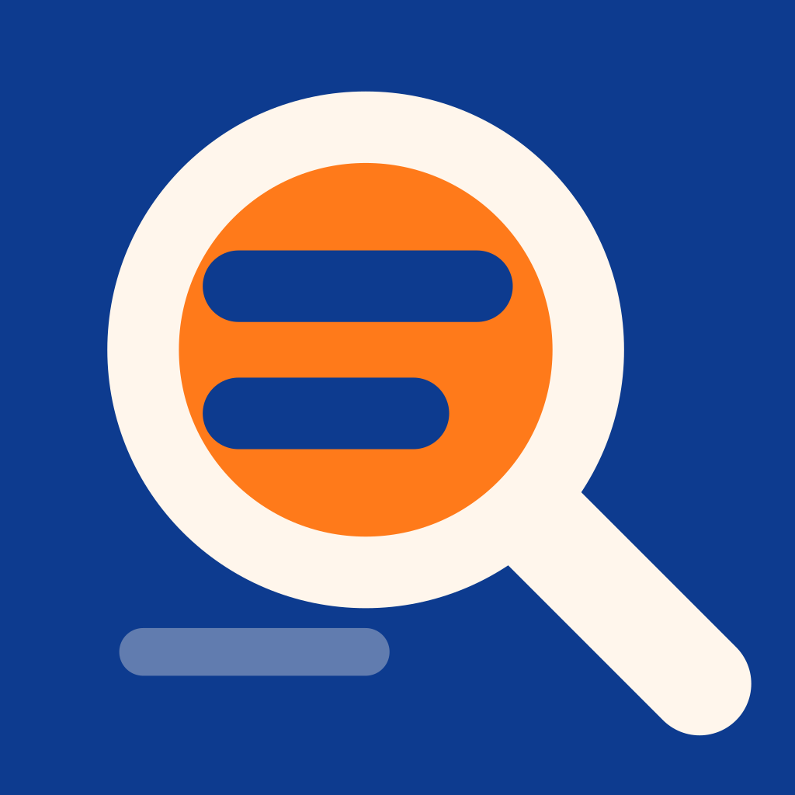

Tuesday 18 November
20:00

Fox is waiting at First Campnow
Today’s 5 questions take about 2 minutes. Step 2 is one test away.Your free ticket is back08:00
Practise “The With Superlatives” with AI feedback.So close to BronzeSun
Just 4 points to go this month.